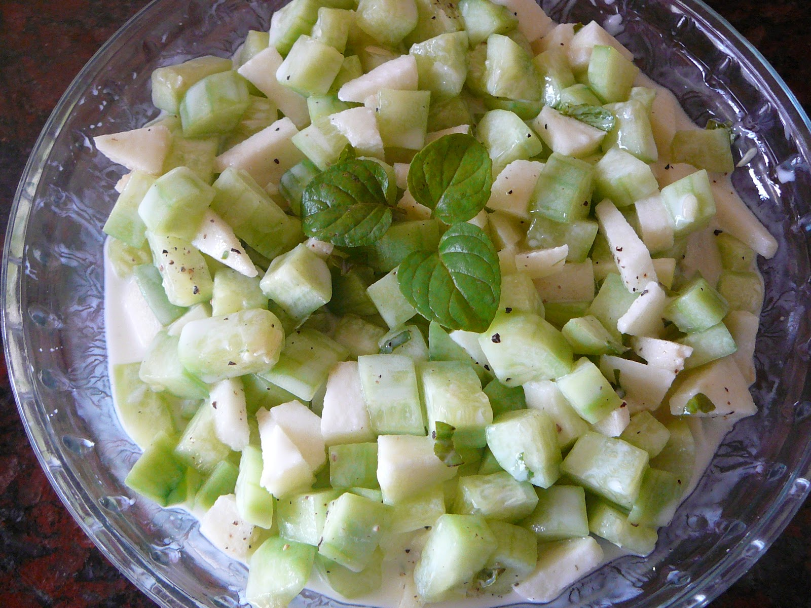

Ensalada de pepino y yogur

La ensalada de pepino y yogur es una receta sencilla y refrescante que destaca por su textura cremosa y su sabor suave. La combinación del yogur con el pepino y las hierbas aromáticas da lugar a un acompañamiento ideal para los días calurosos. Además, se trata de una preparación muy versátil, ya que es posible incorporar distintos ingredientes y especias según las preferencias de cada persona.